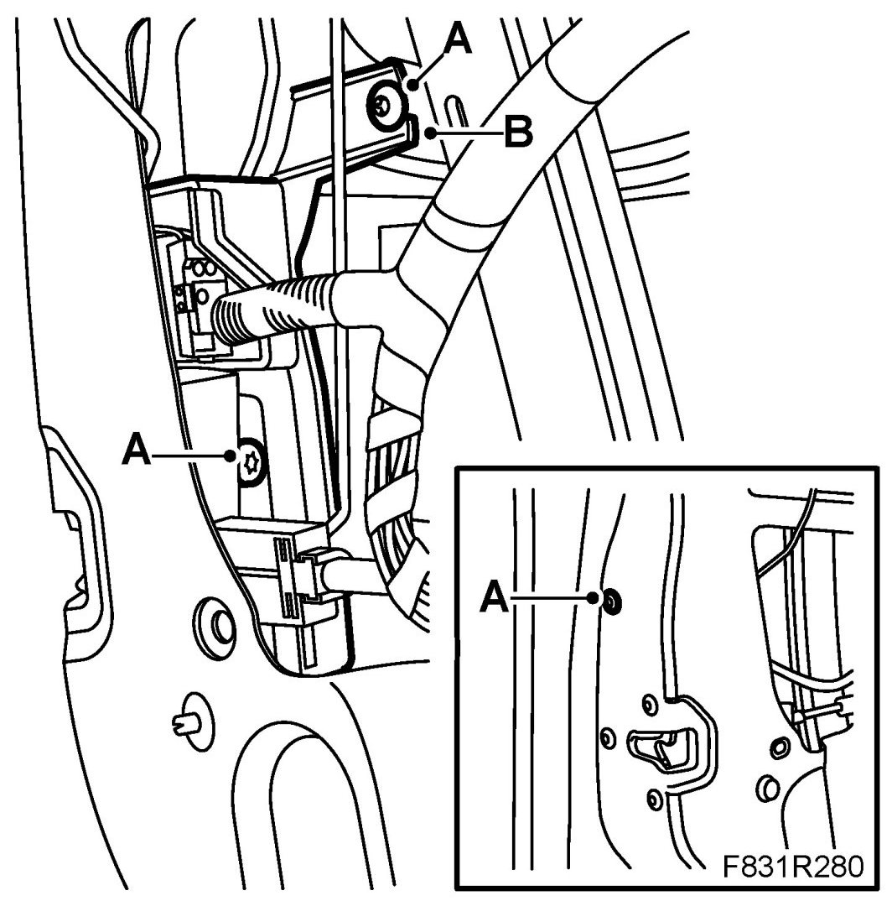
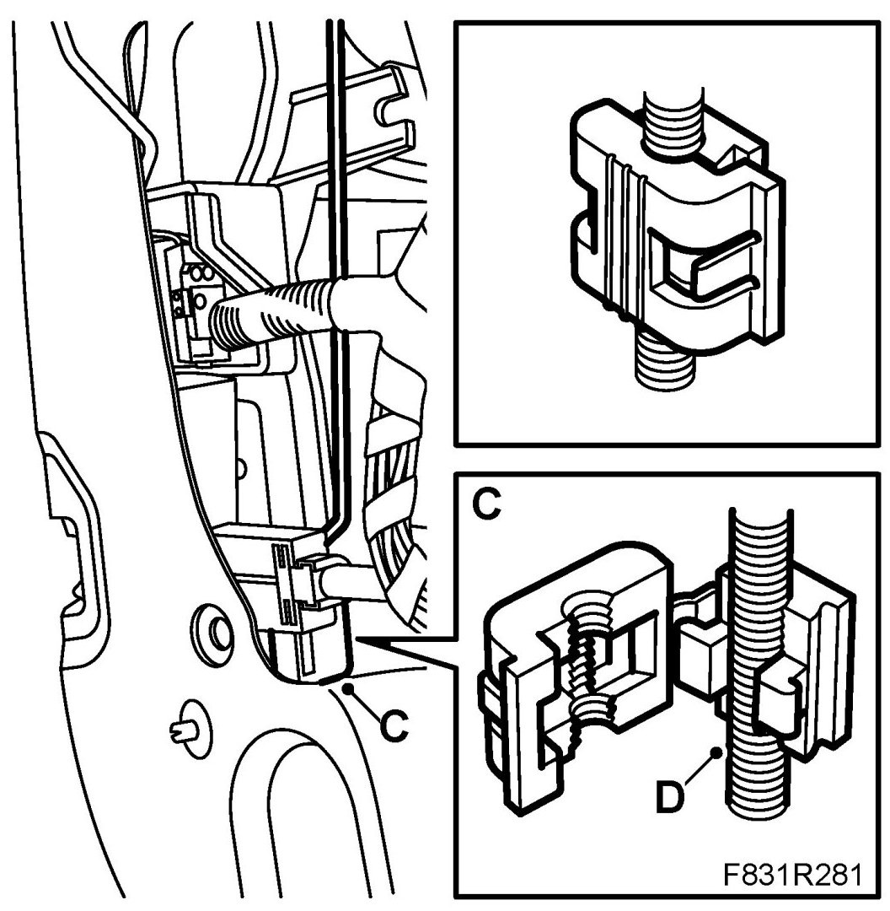
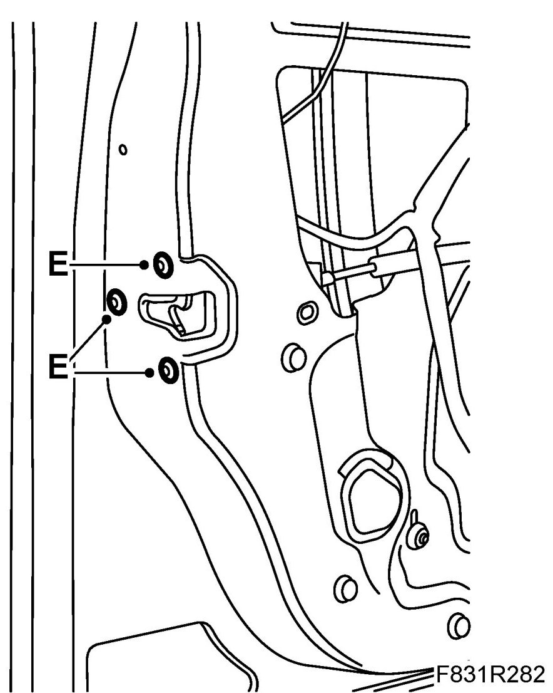
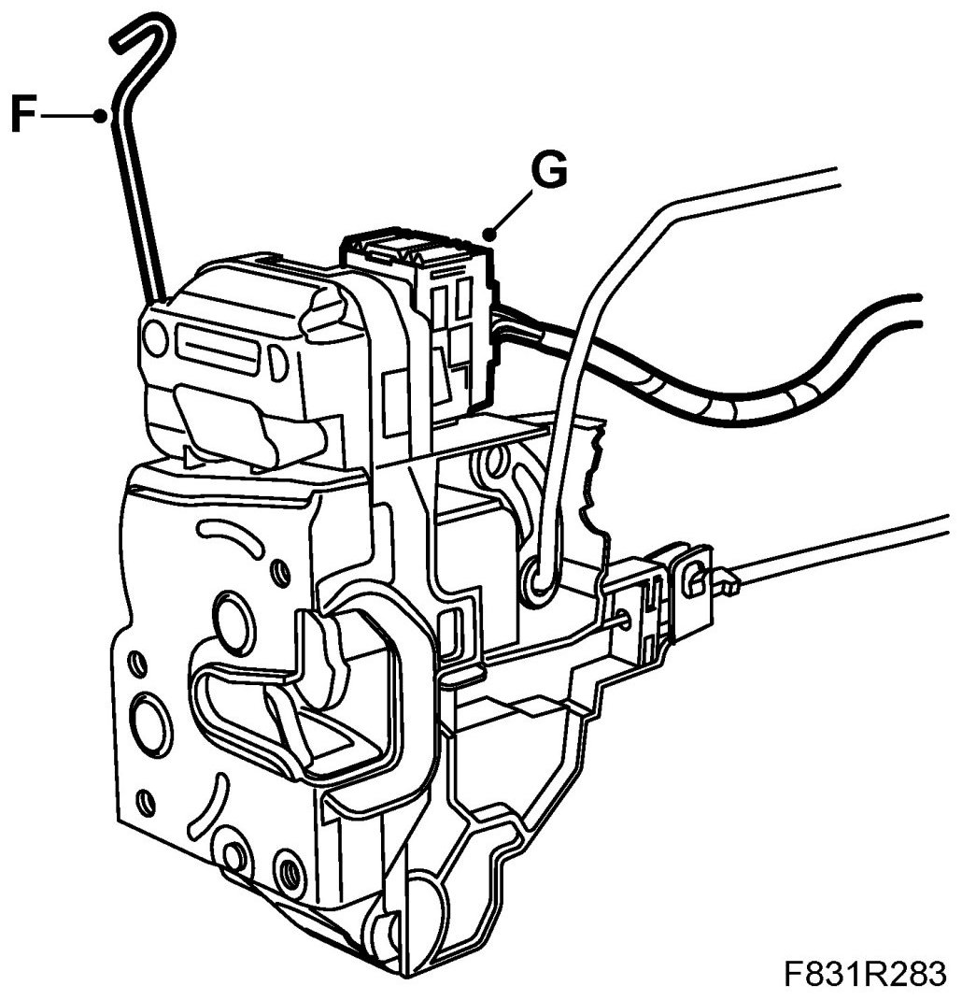
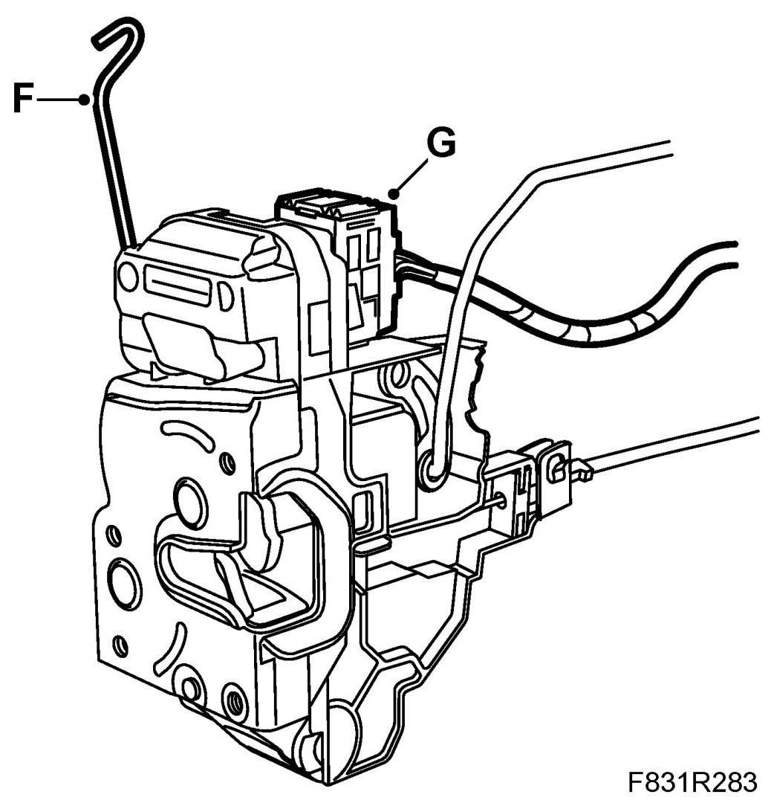
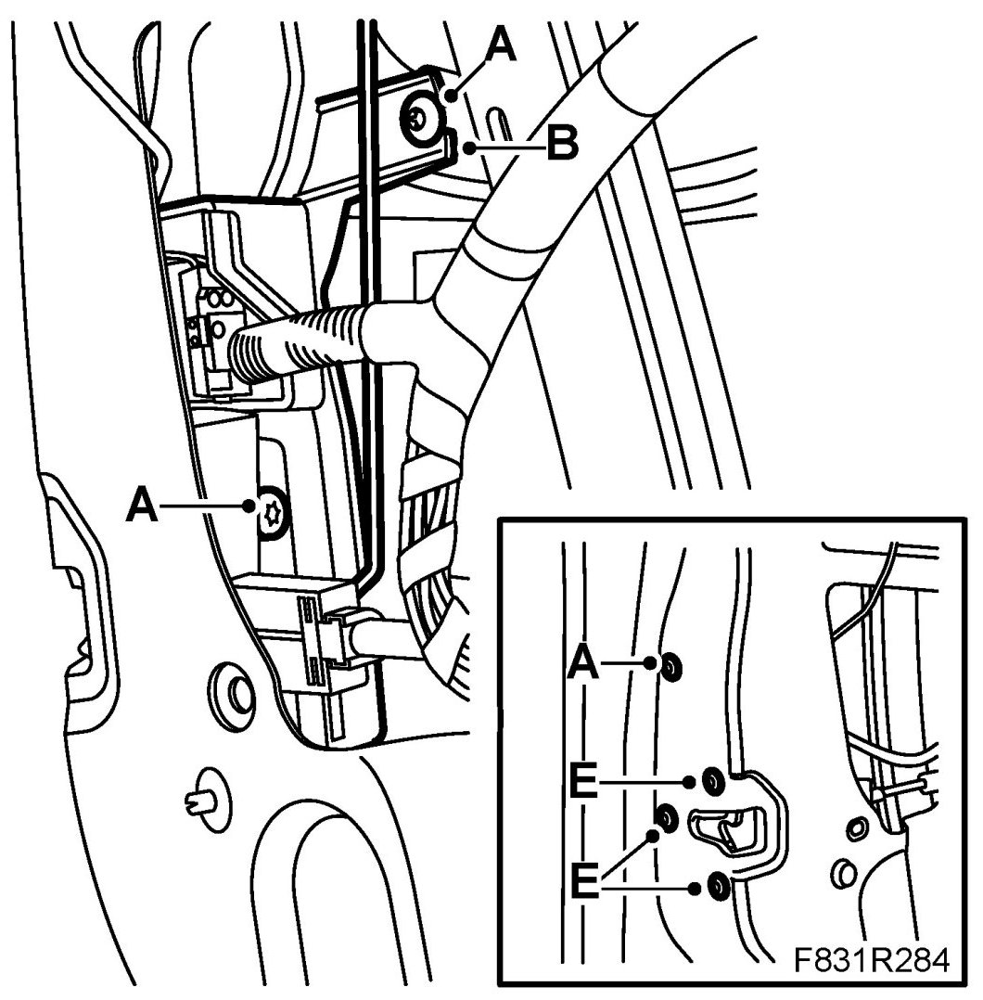
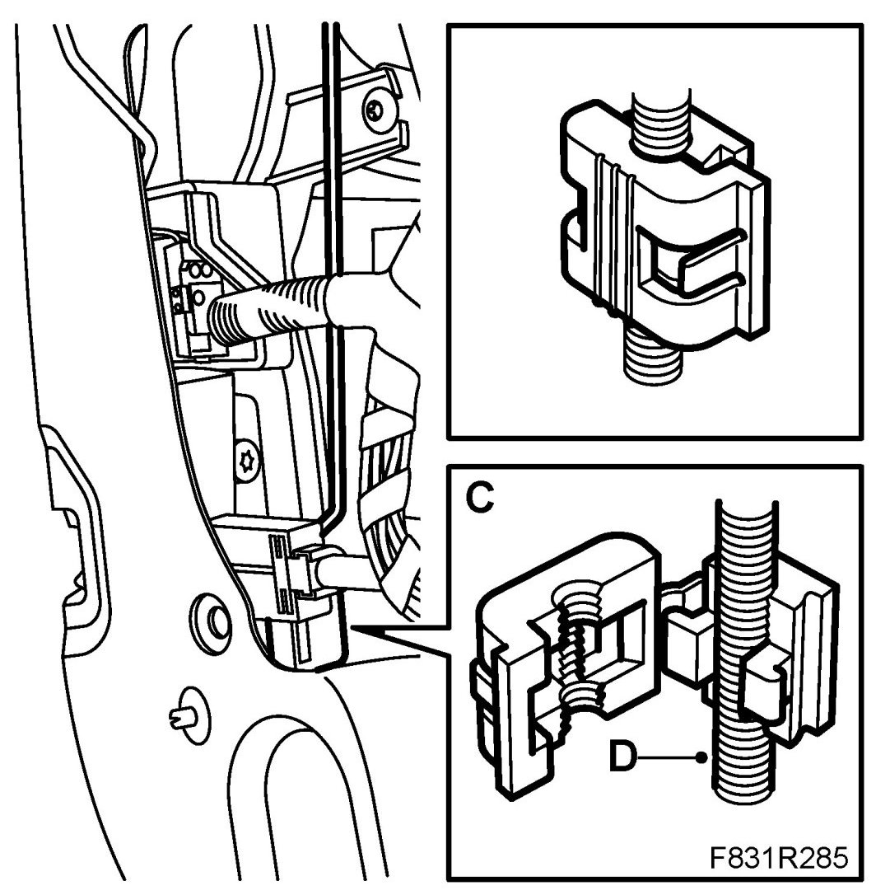

Front Door Lock Unit
Front Door Lock Unit
To remove
1. The window must be closed.
2. Remove the Front door trim.
3. Fold down the water barrier.
4. Driver's door: Remove the guard's (B) bolts (A).

5. Detach the lock cover on the clip (C) for the handle's rod (D)

6. Detach the handle's rod (D) from the clip (C).
7. Remove the bolts (E) for the lock unit.

8. Driver's door Remove the guard (B) by coaxing it out.
9. Unhook the lock rod (F) from the lock cylinder.

10. Remove the lock from the door at an angle.
11. Unplug the connector. (G)
To fit
1. Hook in the lock rod (F) for the lock cylinder.

2. Plug in the connector (G) for the lock.
3. Put in place the lock.
4. Driver's door: Fit the guard (B) in the door. Make sure the handle's rod comes in front of the guard. Lift up the cover at the rear edge so that it is placed between the lock cylinder and the window's U-strip.

5. Thread the bolts (E) for the lock unit.
6. Driver's door: Thread the bolts (A) for the guard (B).
7. Tighten all bolts (A) and (E)
8. Fit the lock rods (D) to the clip (C) and close the clip's lock cover.

9. Check the function of the lock, lock cylinder and the outer handle.
10. Fit the plastic water barrier.
11. Fit the Front door trim.
12. Cars with pinch protection: Perform Programming of the pinch protection.